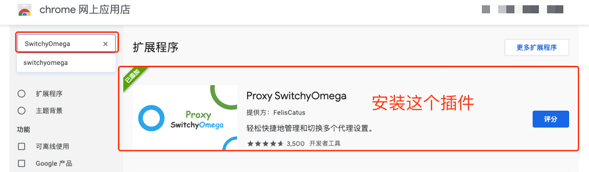
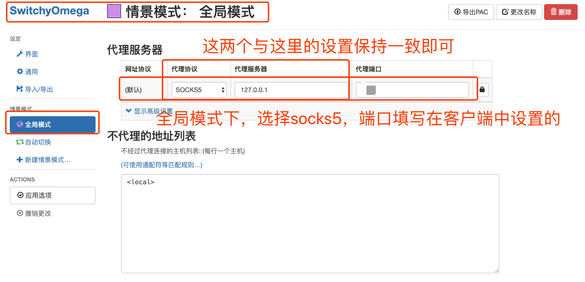
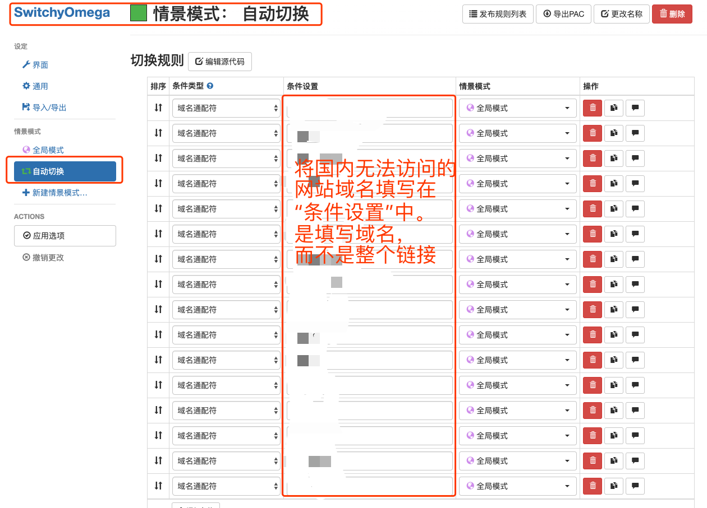

Chrome 科学上网配置3步教程
-
Safari与火狐Firefox在配置完成客户端并启动的情况下就可以直接上外网了。Chrome浏览器有一款插件提供了更加细致的流量控制。安装这款插件之后可以非常方便地将流量在代理与直连之间切换。一般而言，推荐使用Chrome。
-
第一步：安装插件。代理客户端开启全局模式，则chrome已经可以访问外网。然后按照下图所示搜索并安装插件。

-
第二步：设置chrome全局模式的参数。主要是端口与客户端上设置的socks端口一致。其他如图填写即可。

-
第三步：设置需要使用代理的网站。点击“自动切换”，然后将网站域名加入到“条件设置”即可。如果不想手动添加，可以直接访问该网站，显示不能访问之后，插件会提示一键添加条件设置。等浏览器设置完成之后，就可以将客户端改为pac自动切换模式。设置完成之后记得点击“应用选项”，否则设置还没生效
